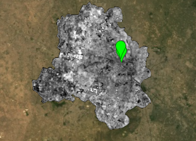
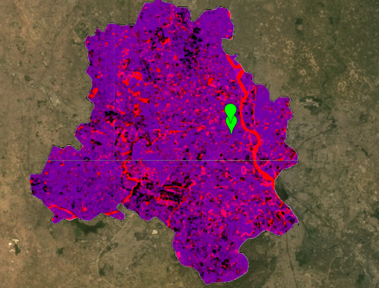
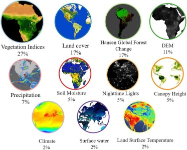

5 Week 5-Google Earth Engine
5.1 Summary
5.1.1 Introduction to GEE
- GEE is a cloud computing platform for planetary-scale geospatial analysis.
- It’s structured into a client-side (user interface) and a server-side (data storage and processing).
- The server-side uses Earth Engine objects prefixed with ‘ee’.
5.1.2 Terminology in GEE
- Raster data is referred to as “Image.”
- Vector data is termed “Feature.”
- Collections of images and features are called “ImageCollection” and “FeatureCollection” respectively.
5.1.3 Interface and Language
- GEE uses Javascript for scripting, which is similar to Python and R.
- Variables and objects in Javascript are defined with ‘var’, where objects can contain multiple values.
5.1.4 Key Concepts
- Scale refers to pixel resolution, influenced by the volume of analysis and set by the output requirements.
- Projections in GEE are simplified as they’re automatically converted to Mercator projection, requiring no user intervention.
5.1.5 Core Processes
- GEE enables various geometry operations such as spatial joins and filtering.
- It incorporates methods for machine learning, including both supervised and unsupervised classification, and deep learning.
- It supports applications such as generating online charts.
5.1.6 Specialized Functions
- Image reduction techniques like reducing by region or neighborhood.
- Statistical analysis through linear regression.
- Spatial analysis using joins, specifically spatial joins and intersects.
5.2 Application
First, I used the new tool GEE I learned this week to draw the surface reflectance of the Delhi area. Surface reflectance measures the proportion of light that is reflected from the earth’s surface, corrected to account for atmospheric conditions. This data is critical for various types of analyses, such as assessing vegetation health, urban heat distribution, or water body extents.

Then I did texture measurement and PCA analysis, and finally got the picture below

Tamiminia, Haifa, et al (2020) provides a comprehensive overview of the use of Google Earth Engine (GEE) in processing and analyzing large-scale geospatial data for environmental monitoring. The study examines peer-reviewed articles that utilized GEE and categorizes them based on features such as data type, sensor type, study area, spatial resolution, application strategy, and analytical methods.
- This is a summary of ready-to-use products applied in GEE.

The most significant application, at 27%, is the assessment of Vegetation Indices, which are critical for monitoring plant health, vegetation cover, and biomass production. Land cover analysis, which helps in understanding the distribution of different types of land and surface materials, constitutes 17% of the applications, tied with Hansen Global Forest Change, which tracks deforestation and forest dynamics. Digital Elevation Models (DEM), which provide information on terrain elevations, account for 11% of usage.
5.3 Reflection
Google Earth Engine (GEE) is indeed a powerful tool that has revolutionized the field of remote sensing and geospatial analysis. Its ability to handle large datasets efficiently and perform complex geospatial processing tasks quickly is impressive. By providing access to a vast catalog of satellite imagery and geospatial datasets, along with robust computational power, GEE significantly reduces the time and effort required for data analysis.
The convenience of GEE is evident in the way it simplifies workflows that traditionally involved multiple steps and software tools like QGIS and SNAP (Sentinel Application Platform). For example, tasks such as filtering a collection of satellite images, reducing data based on specific parameters, and visualizing the results can be scripted and executed in GEE’s Code Editor, often in a matter of minutes, depending on the complexity and size of the task. Furthermore, GEE’s speed and efficiency don’t come at the expense of precision or the range of possible analyses.
Although GEE is very convenient to use, it does not mean that using GEE does not require coding skills. GEE uses a different programming language, JavaScript. Although I was a little uncomfortable at first, after a while I found that I could still use GEE very smoothly. I believe this must be the coding foundation I learned in R that helped me.